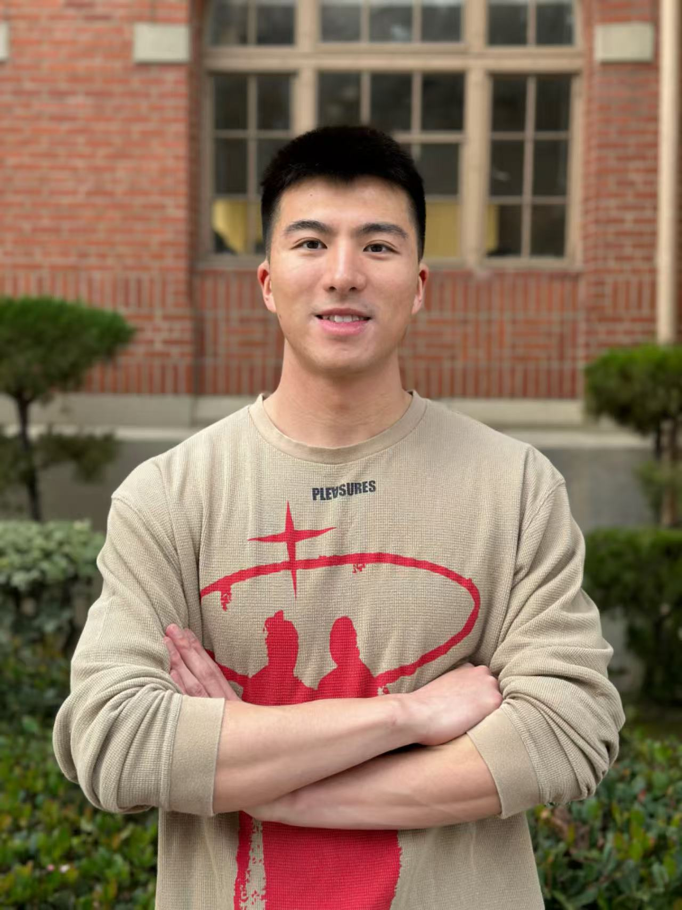
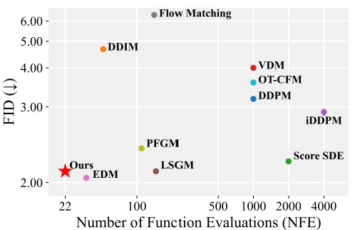
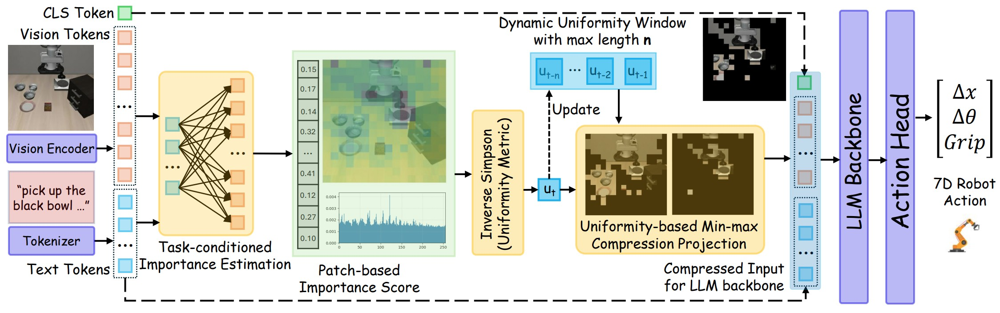
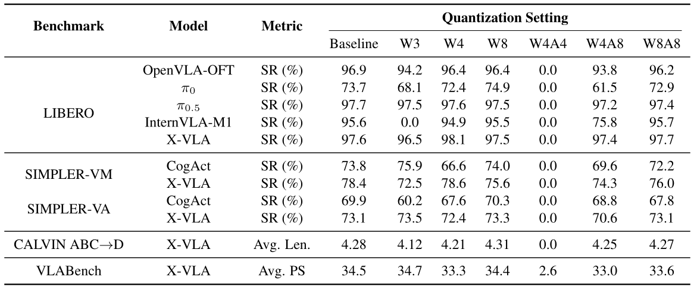

Ph.D. in Robotics2024 – Present
Colorado School of Mines, Golden, CO · Advisor: Dr. Yangming Shi

Ph.D. Student in Robotics
Colorado School of Mines, Golden CO · Advised by Dr. Yangming Shi
Jiuyi (Joey) Xu is a second-year Ph.D. student in Robotics at the Colorado School of Mines, advised by Dr. Yangming Shi. His research centers on Vision-Language-Action (VLA) models and efficient AI. He holds an M.S. in Computer Science from the University of Southern California (USC) and a B.E. in Software Engineering from Dalian University of Technology (DLUT).
Previously, he was a student research intern at USC's Institute for Creative Technologies (ICT), working on open-vocabulary object detection (OVOD) and open-vocabulary semantic segmentation (OVSS). He serves as a peer reviewer for the Journal of Computing in Civil Engineering and several academic conferences and journals. Outside of research, he enjoys going to the gym and playing basketball.
Education
Colorado School of Mines, Golden, CO · Advisor: Dr. Yangming Shi
University of Southern California, Los Angeles, CA
Dalian University of Technology, Dalian, China
Research Experience
Colorado School of Mines, Golden, CO · Advisor: Dr. Yangming Shi
USC Institute for Creative Technologies, Los Angeles, CA · Advisor: Dr. Meida Chen
Industry Experience
Denver, CO · Manager: Ryan Austin
2026
2025
2024

LowDiffAn efficient cascaded diffusion framework that progressively refines images from low to target resolution with a single unified model, reaching comparable or better quality with far fewer high-resolution sampling steps. Works in both pixel space (EDM) and latent space (LightningDiT), delivering 50–80% throughput gains across CIFAR-10, FFHQ-64 and ImageNet-256.

FastVLAA training-free, instruction-aware, temporally adaptive visual-token compression framework for efficient VLA inference. It scores tokens via instruction-to-vision attention and adapts the compression rate online with an inverse-Simpson uniformity metric. Across OpenVLA, OpenVLA-OFT and CogACT, it cuts backbone FLOPs by 35–60% and latency by 9–32% (1.11×–1.46× speedup) while keeping task success.

QuantVLAThe first comprehensive post-training quantization (PTQ) benchmark for VLA models, spanning weight-only (W3/W4/W8) and weight-activation (W4A4/W4A8/W8A8) settings across LIBERO, SIMPLER, CALVIN and VLABench, plus LLM techniques such as AWQ and SmoothQuant. It reveals that the LLM backbone and action head are especially sensitive, and that aggressive bit-widths (e.g. W4A4) trigger sharp, model-dependent collapse.
Awards
Academic Service — Reviewer
Happy to chat about VLAs, WAMs, efficient AI, or potential collaborations.